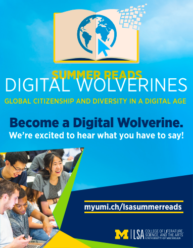

Digital Wolverines Online Summer Reads Project
February - September 2017
Stakeholder Engagement
In the lead up to summer 2017 the LSA Associate Dean for Undergraduate Education called together multiple stakeholders from the college to discuss the possibility of engaging students over the summer on topics of digital citizenship. The stakeholders represented the following offices on campus:
- U-M Privacy Officer & Interim Chief Security Officer
- Associate Vice Provost for Academic Innovation & staff
- Director of the LSA Honors Program & staff
- Language Resource Center staff
- Student Life representative
- Summer Bridge Program Manager
- And me, as the BlueCorps Advisor within LSA Instructional Support Services (Tech support for students, faculty & staff)
It was decided to create optional online modules within the learning management system (LMS) they would use when they started school in the fall - Canvas.
Content Development and UX Considerations
I worked on the User Experience team to develop content and the experience for the online modules within Canvas. After the content was drafted, I ran it by several students to ensure that it was accessible, not too boring etc. In the end we landed on five modules:
- Introductions
- Digital Wellness
- Free Speech, Hate Speech, Provocation
- Is Digital Access a Human Right?
- Diversity in Action, Your Pledge, Your Project
While we were tied to the Canvas LMS, there were a lot of decisions to be made about how to lay out the content, how large to make the cohorts, how to moderate the discussions etc. While making decisions we mapped out each scenario, as a group of four decided on one, and then engaged current students to test out our decisions to validate or invalidate our choices.
Training
I developed the training for the eight students who would serve as moderators for the summer reads project. I designed the training to include facilitator icebreakers, clear context of the project, their role in the project, what was and wasn’t their responsibility, what to know about the Canvas LMS, what to do if something goes wrong, and time to practice. Students communicated that they left with a solid sense of what to do, and who to reach out for help throughout the process.
Implementation
The project engaged 77 students over the course of the summer, approximately 2% of the incoming freshmen population.
The students were seperated into 5 different cohorts with between 13-18 students in each. The cohorts were spread across the summer starting on June 5th and concluding on August 11th. Each cohort had two peer facilitators engaging with students throughout the course. For earlier cohorts, content was published a week at a time, while later cohorts it was published all together. In addition to the cohort model, there were two Ask Me Anything sessions that students could participate in. One that happened on June 23rd with two of the facilitators and another that happened at the end of the experience with members of the Student Government. Both were recorded and posted to YouTube. They currently have 133 and 99 views respectively.
Reflection
This was my first time engaging with building an online learning experience for students and I learned a few key insights throughout the experience.
LEARNING 1: A warm welcome is important for continued engagement. Without a warm welcome, only particularly bold students will engage, and that engagement will drop-off. A more engaged outgoing student may further engagement
LEARNING 2: Lurking is Engagement - the more time someone spent on the site the more likely they seriously engaged with the information. However we would need a better analytics on page to get a more complete sense of which information was most engaging
LEARNING 3: Follow up surveys for the students, and or interviews after the fact would have provided deeper learnings for the next iteration. I switched roles between the conclusion of the pilot and the next iteration - but would recommend that as part of the plan for next time.
Support Structure for Liberal Arts Students with Finance Aspirations
October 2017 - June 2018

Context
As the Internship Program Coordinator for Business & Technology my role centered around building pathways or business minded LSA students to see themselves in finance. I was hired into the role without any knowledge of the finance industry, but a lot of experience in getting up to speed quickly in topics I’m unfamiliar with, and to understanding and delivering on user needs.
Needs Assessment
I started my needs assessment by sourcing the internet for as much information as I could. As soon as I had a grasp around the basics: terminology, resume expectations, recruiting timeline, interview style and topics, I started meeting with students. In meeting after meeting one core pain point emerged. The liberal arts classes they were taking provided them with the broad strokes education they needed, but not the nitty gritty skills they would be tested on in interviews, resulting in:
- Lack of confidence in their finance skills
- Lack of clarity on how to talk about their experiences in a finance context
- Lack of understanding about the nuances and requirements of the recruiting process
Interventions
I addressed these pain-points with the following interventions
- One-on-one meetings with me where we could address issues of confidence, provide clarity on recruiting processes & timeline, review application materials, direct to resources to develop excel modeling skills.
- Developed an “Industry Insiders” event that brought together 6-12 LSA alums working in finance to speak to how their liberal arts degree has been beneficial in their work. This event intended to address how to talk about their experiences in an finance context and to to develop relationships with individuals in the field as mentors/guides in the process
- Created a google sheet that listed all of the recruiting events happening on campus as well as all the employer portals to sign-up all in one convenient place
- Created bi-weekly email newsletters with industry tips, updates on timelines, and links to upcoming events and aforementioned spreadsheet.
Impact
In the eight months I was in the role, I was able to turn a few One-on-One meetings into a budding finance community 850 students strong. The google spreadsheet was an overwhelming success and the emails were cited by one student as the “most-helpful emails I receive from Michigan.”